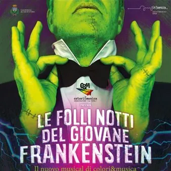

sab 21 nov · dalle 20:30
“Le folli notti del giovane Frankenstein”
Colori & Musica ritorna con il nuovo musical diretto da Paolo Pieretto “Le folli notti del giovane Frankenstein”, liberamente ispirato al film “Frankenstein Junior” di Mel Brooks, per cercare ancora una volta di emozionare e magari di sorprendere. “Le folli notti del giovane…
 Indicazioni
Indicazioni
- Costi e prenotazioni
- Costo non indicato · Prenotazione non indicata
- Programma
- Programma da verificare. Apri la fonte ufficiale per orari e possibili aggiornamenti.
- In caso di maltempo
- Nessuna indicazione specifica pubblicata.
- Note
- Acquisito automaticamente dalla fonte.
L’EVENTO
Descrizione completa
Colori & Musica ritorna con il nuovo musical diretto da Paolo Pieretto “Le folli notti del giovane Frankenstein”, liberamente ispirato al film “Frankenstein Junior” di Mel Brooks, per cercare ancora una volta di emozionare e magari di sorprendere.
“Le folli notti del giovane Frankenstein” racconta le peripezie tragicomiche di Frederick Frankenstein, nipote del barone Victor von Frankenstein.
Siamo negli anni ‘30 e Frederick, giovane medico e celebre professore universitario, per distinguersi dal nonno, di cui rinnega le teorie mediche che considera assurde, ha modificato il proprio cognome in Frankenstiin. Ma, alla morte del barone, riceve in eredità il castello in Transilvania, dove si trasferisce. Sarà qui che, con il maldestro aiutante Igor, la sfrontata assistente Inga e la sinistra e misteriosa Frau Blucher, Frederick metterà a punto il suo esperimento: nientemeno che ridare vita ad un morto. Il tutto, però, con effetti esilaranti.
“Le folli notti del giovane Frankenstein”, pur essendo un musical comico, sotto traccia va a toccare due argomenti etici abbastanza importanti: l’aspirazione dell’uomo a sostituirsi a Dio (ossia “dare vita ad un morto”) e la paura del diverso (ossia “paura del mostro, perché diverso dagli altri”).
Interpreti:
Frederick: Marcos Gutierrez
Elizabeth: Federica De Marco
Inga: Elisa Blancuzzi
Igor: Paolo Pieretto
Frau Blucher: Marina Pellin
Mostro: Paolo Menapace
Ispettore Kemp: Alessandro Ciciliot
Victor: Umberto Demitry
Abelardo: Carlo Valvason
Ziggy: Nadia Visintin
Popolani:
Alessandro La Cara; Anita Tsoukanova; Carla Cordovado; Corinna Gerometta; Francesca Boledi; Gianmaria Radente; Angela Romeo; Manuela Di Monaco;Pierangela Cremasco; Renzo Lizzit; Roberta Asquini; Sonia Castro; Stefan Candusso
Maestra del coro: Liliana Moro
Prenotazioni on line sul portale EVENTBRITE
Per informazioni: cell. 327 8290404, tempestacomunita@gmail.com
Associazione Colori&Musica - Nel 1994 un gruppo di giovani cantori, sotto la direzione di Lucia Follador, dà vita ad un nuovo coro dal repertorio gospel, pop e rock in versione corale unito, in alcuni casi, a parti teatrali originali o di testi noti, con la regia di Guido Covazzi, esibendosi principalmente in Friuli ma anche in altre parti d’Italia.
Dal 2002 la corale si dà una veste istituzionale, fondando “colori&musica”, associazione culturale senza fini di lucro che ha come scopo la promozione della cultura musicale ed artistica, tesa anche e soprattutto a sensibilizzare gli spettatori sul tema della solidarietà: ne sono testimonianza la maggior parte dei concerti e spettacoli di beneficenza a favore di varie associazioni come "Stavo pensando a te", "Note come gocce", "Un biglietto per un sogno", "Solidalinote" e spettacoli di musica e teatro come "Bianco/Nero colori in corso", "Canto di Natale" e "Favolando".
La prima commedia musicale più impegnativa, messa in scena dall’associazione nel 2007, è senz’altro "Aggiungi un posto a tavola", musical originale di Garinei e Giovannini, con la regia di Matteo Milanese e la direzione musicale di Thomas Salvalaggio, replicato, con grande successo di critica e pubblico, una ventina di volte negli anni 2007-2009 e vincitore di tre prestigiosi riconoscimenti: premio “Moret d’Aur 2007”, premio “Bontà Città di Udine Cavalieri d’Italia”, premio “Miglior attore protagonista (non professionista) teatro/FVG”. Dopo “Aggiungi un posto a tavola” l’associazione realizza la “Cantata di Natale”, in stile Spiritual/Gospel, presentando, in diverse chiese, teatri ed altre strutture, un repertorio di anno in anno quasi completamente diverso, costituito da pezzi in lingua inglese della tradizione americana inframmezzati da interventi teatrali in italiano. La direzione del coro è di Alessandro Autero e la regia delle parti teatrali di Paolo Pieretto. Nel 2015 l’associazione rimette in scena lo spettacolo "Bianco/Nero colori in corso", con alcune delle più belle canzoni pop e gospel e testo di Guido Covazzi, liberamente ispirato a testi di William Shakespeare e Woody Allen, nonché lo spettacolo natalizio “Favolando”, spettacolo originale di Guido Covazzi, con canzoni pop e gospel della tradizione natalizia; la direzione musicale passa ad Elisabetta Biondi, mentre la regia è sempre affidata a Paolo Pieretto. Nel 2017, invece, c’è il debutto del nuovo musical “Beautiful City”, che la compagnia presenta, con grande successo di pubblico, nei vari teatri regionali fino al 2019 (l’ultima replica che doveva tenersi nell’aprile del 2020 salta a causa del COVID). La regia è di Paolo Pieretto e la direzione musicale di Thomas Salvalaggio. Sempre nel 2017 viene portato in scena un altro musical conosciuto, “Forza venite gente” di Castellacci-Paulicelli, anche questo replicato in diversi teatri regionali fino al 2019. Alla fine del 2019, per festeggiare i 25 anni di attività dell’associazione, viene realizzato un nuovo spettacolo originale dal titolo “Il colore della musica”, con un testo teatrale di Guido Covazzi come filo conduttore e, da corollario, una selezione di 25 canzoni che rappresentano il repertorio del gruppo. La direzione corale passa a Sara Abriola, mentre la regia è sempre di Paolo Pieretto. Nel periodo del lock down, non si resta fermi e in modalità on-line si riesce produrre ben quattro video da remoto cercando di trasmettere, in questo modo, un messaggio di speranza per tutta la gente. Ad ottobre 2020 ci si incontra nuovamente, partecipando come ospiti a “Percoto Canta - Special Edition” al teatro “Giovanni da Udine”, cantando un medley di canzoni tratte dai nostri spettacoli. Dalla fine del 2021, finalmente, abbiamo ripreso le attività a pieno ritmo, riportando in scena lo spettacolo “Il colore della musica”, calcando vari palchi in provincia di Udine fino al debutto del nostro nuovo musical: “Le folli notti del giovane Frankenstein” ad aprile 2024. La regia è sempre di Paolo Pieretto mentre la direzione musicale passa a Liliana Moro.
Inoltre abbiamo ripreso, nello spirito che da sempre muove l’associazione, ad organizzare diversi concerti nelle varie case di riposo della regione, per portare un po’ di conforto e spensieratezza agli anziani ospiti. Il fine di tutti i nostri spettacoli è sensibilizzare lo spettatore sul tema della solidarietà, raccogliendo fondi in favore dell’associazionismo locale, che si occupa, prevalentemente, di assistenza a malati, diversamente abili o soggetti fragili, ma anche accendere un sorriso ed offrire momenti di spensieratezza.
IL PROGRAMMA
Programma e orari
Appuntamenti raccolti dalle fonti elencate. Dove manca un orario, non è ancora disponibile in questa scheda.
Programma pubblicato
- Dal 2026-11-21 al 2026-11-21
INFORMAZIONI UTILI
Prima di partire
- Controllare la fonte prima di partire.
ORGANIZZAZIONE